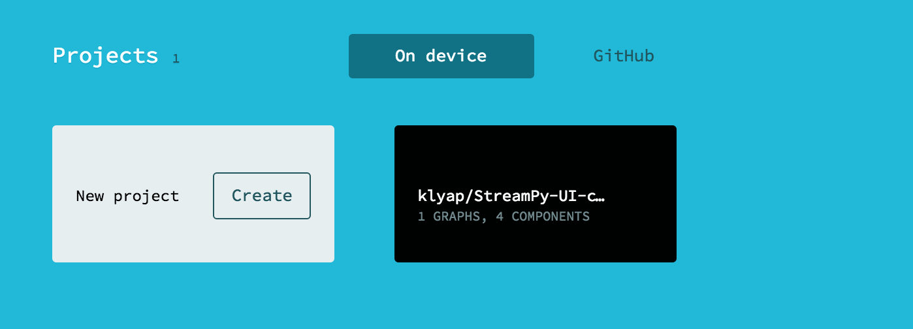
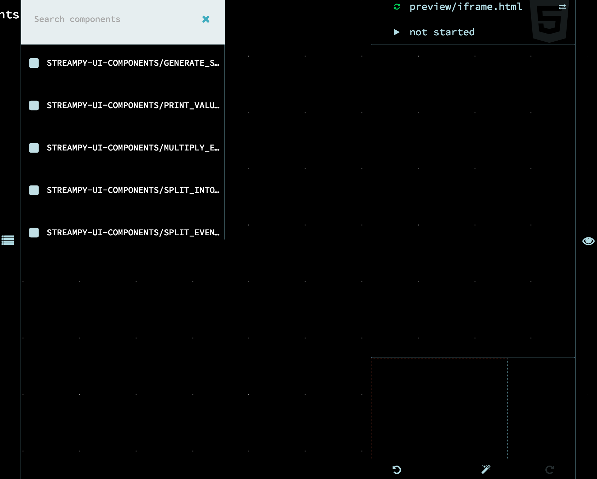
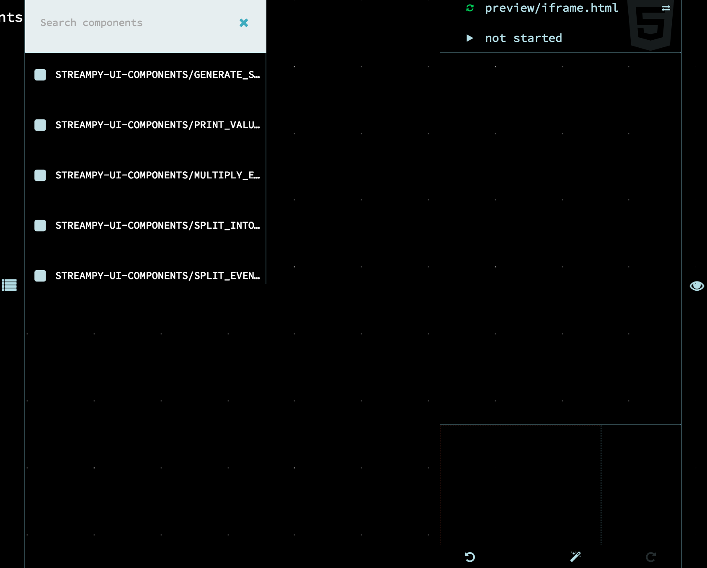
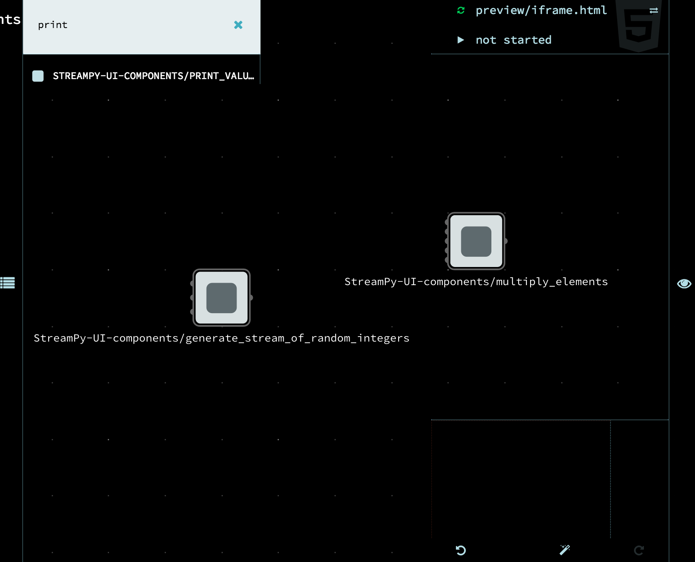
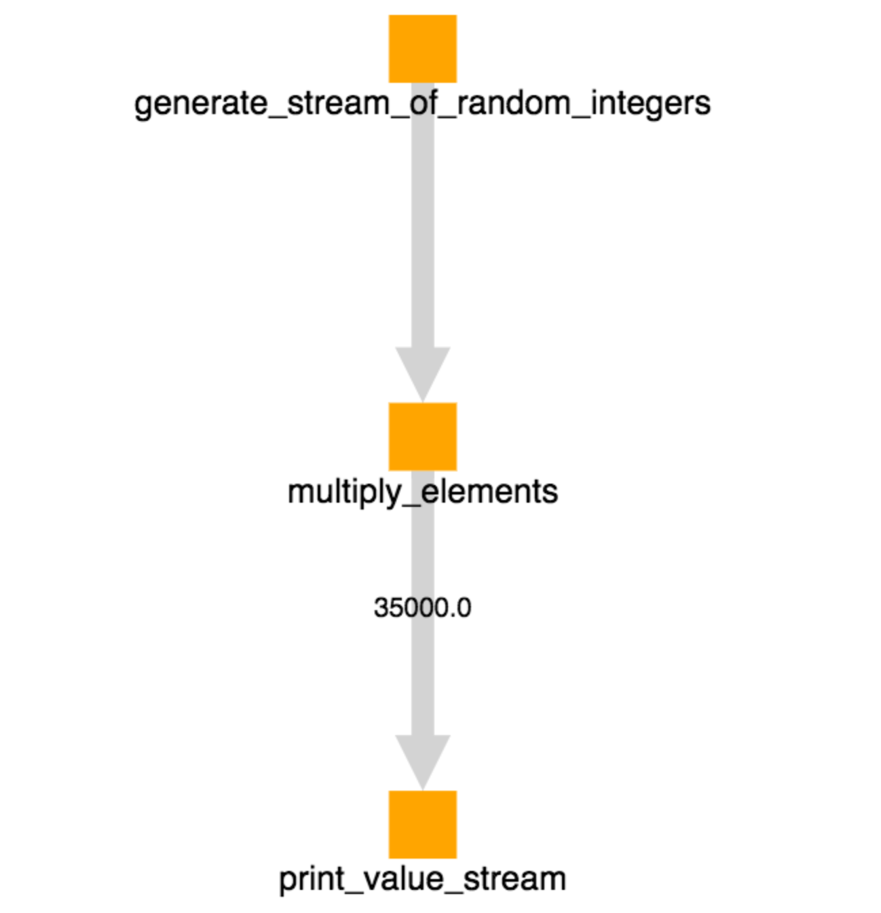

Getting Started¶
Install tool¶
Requirements: Python 2.7
Open your terminal or command line program.
- Check that you have Python 2.7 installed by entering in:
python- It should say something like this:
Python 2.7.10 (default, Jul 13 2015, 12:05:58) [GCC 4.2.1 Compatible Apple LLVM 6.1.0 (clang-602.0.53)] on darwin Type "help", "copyright", "credits" or "license" for more information.- Get out of the Python shell by typing in
quit()
- Type in the following line to download the files:
git clone https://github.com/klyap/PStreams-UI.git
- Navigate to the folder with the code in it by typing in terminal/command line:
cd src/root/nested
- Run the tool by typing in:
python run.py FILENAMEHERE.json
where
FILENAMEHEREis the name of a JSON file downloaded from flowhub.com or one that is in the special format for this tool.
Download UI parts¶
Get started with Github and Flowhub to use the graph-maker. These graphs will turn into a Python program!
Get our special pre-made components for your graph¶
- Go to https://github.com/
- Sign up for a Github account or log in
- Copy the files over to your account by going to https://github.com/klyap/StreamPy-UI-components and clicking “Fork” in the top right corner
- Check that it’s in your account by going to https://github.com/YOURUSERNAME?tab=repositories, where
YOURUSERNAMEis your Github username.
Set up your Flowhub workspace¶
Go to https://app.flowhub.io/
Log in using your Github account.
- Import the special pre-made components that you forked onto your Github account by clicking on ‘Github’, then ‘Add a repository’. Enter in the repository name, where
YOURUSERNAMEis your Github username: YOURUSERNAME/StreamPy-UI-components

- Import the special pre-made components that you forked onto your Github account by clicking on ‘Github’, then ‘Add a repository’. Enter in the repository name, where
- Grab a local copy of the repository by clicking on the cloud

next to the repository’s name.
Go to ‘On device’. Your repository should be there, ready for use!
Make a graph¶
- Click into the Flowhub repository you just got from Github.
- 
- Click on the side bar and check that you have premade components

Click on the side bar again to close it.
Start looking for the components you want by clicking on the name of the graph. It should turn into a search bar. You can look for components you want by typing in its name and selecting it.
 
- Try getting the
generate_stream_of_random_integers,multiply_elementsandprint_value_streamcomponents on the canvas using the search bar. - 
- Try getting the
Zoom in on
multiply_elementsand notice that the ports are labelled. Click on it. You can enter values for these parameters in the form on the left corner. #. func : name of the basic Python function that corresponds to this componentIf you don’t type in anything, it will be the name of the component
type : PStreams wrapper type. What do you expect the input value to be? Just a simple value (
element), a list (list) or something else?If you don’t type in anything, it will be
elementstate : (optional) state of the function
If you don’t type in anything, it’s assumed the function is stateless
multiplier, and other labels : constant parameter. Some functions require additional information that is applied to all the input values it takes in. In this example, it is the number you want to multiply the input value by.
If you don’t type in anything, it will be left empty
- in : input stream
Leave this blank! This port is where the data stream comes in!

- For this example, type in any number in the
multiplierport. Leave everything else blank. Zoom out when you’re done. 
- For this example, type in any number in the
- Click on the print_value component and type in
0for its state label. 
- Click on the print_value component and type in
- Connect the components up!

You’re done!
Turn your graph into code¶
- Click on the cog button on the top left.

- On the pop up window, click on the download button.


Hint: You should see something like this that indicates that you have successfully downloaded the graph.

Run the tool¶
Make sure you have the tool downloaded. install_tool
Open your terminal/command line (make sure it’s open in the folder that the tool is). Type in
python run.py main.jsonand hit enter.
Because the numbers were generated, the final numbers that are printed out will be different. I chose a multiplier of
1000, so all the numbers that printed out have 3 zeroes at the end of them.
Visual debugger¶
- After you run the tool. a window should pop up with an animated graph on it. This is the visual debugger. You can see numbers get multiplied as they pass through the graph.
- 
- Hint: If this doesn’t happen automatically, go to PStreams-UI/src/root/nested/web and open main.html in your browser (Chrome, Safari, Internet Explorer, etc).

Congrats! You built your first streaming Python program!